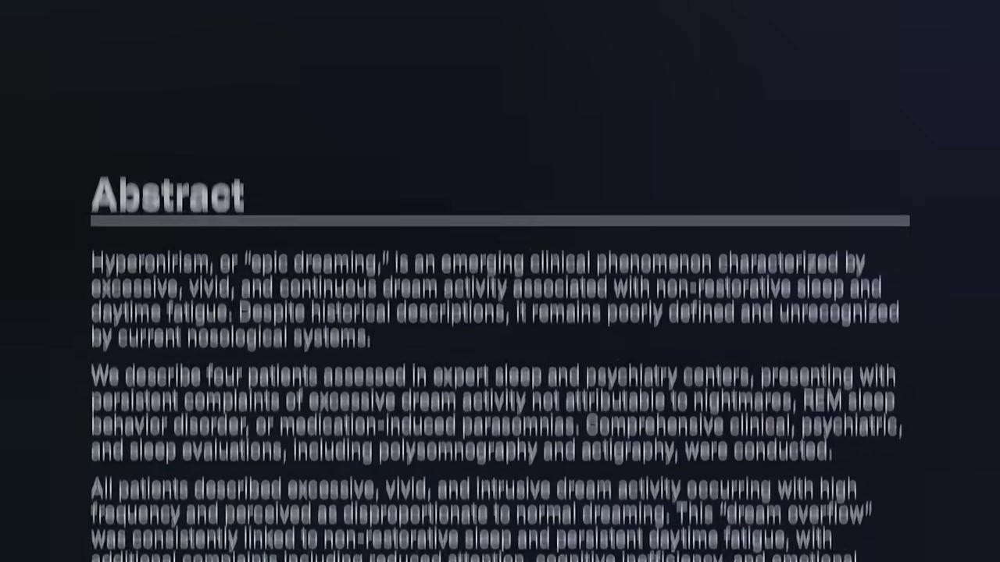
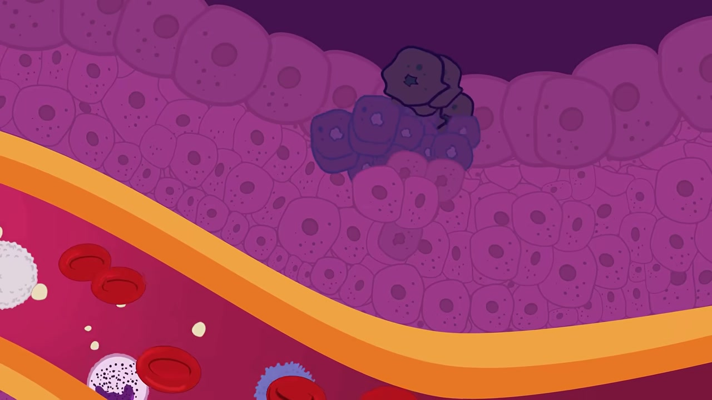

Medicine Is Learning to Listen Before We Have Words
From infrasound and anesthesia to strange dreams, cancer, fertility, and nerve repair, some useful signals become measurable before conscious report or clinical categories can explain them.
The story starts in a room that felt haunted.
Vic Tandy, an engineer working around medical equipment, did not believe in ghosts. His colleagues said the lab felt wrong. They felt watched. Some thought they saw a gray shape at the edge of vision. Tandy dismissed it, until he stayed late and felt it too: cold, pressure, dread, the sense of someone nearby.
His explanation was not mystical. It was mechanical.
Tandy argued that a fan in the lab was producing a standing wave near 19 hertz, just below the usual edge of conscious hearing. A fencing foil in the room vibrated by itself. When the fan stopped, the blade stopped. The “ghost” was likely a physical condition in the room, translated by the body into fear before the mind had a better story.
That is the common question running through SciOne’s Russian science roundup. The episode covers very different topics: infrasound, anesthesia, strange dreams, pancreatic cancer, tumor biology, fertility, and spinal-cord repair. They are not one discovery. They do not carry the same level of evidence. But together they show how often biology acts before people, patients, or clinicians have a clean name for what is happening.
We like to imagine consciousness as the control room. Something happens, we notice it, then we explain it.
Much of medicine works in the opposite order. The body reacts first. The explanation arrives late.
Signals before awareness
The haunted-lab story is a good opening because it is both vivid and dangerous. Vivid, because a low-frequency vibration gives a clean physical route into a supernatural feeling. Dangerous, because it is easy to turn that into the lazy claim that ghosts are just infrasound.
The source material is more careful.
In one small 2026 human study, participants heard calming or unsettling music with or without added infrasound around 18 hertz, at roughly the loudness of industrial air conditioning. They guessed whether the extra sound was present no better than chance. The experiment did not produce ghostly experiences.
But the body still shifted. Calm music alone lowered salivary cortisol. Add infrasound, and cortisol moved upward. Participants also rated the experience more negatively, including more sadness and irritability.
Another “haunted room” experiment complicates the story further. In that study, infrasound and electromagnetic fields did not neatly map onto the places where people reported unusual sensations. Expectation mattered.
That is not a disappointing result. It is the real result. The nervous system responds to physical conditions, expectation, context, and prior story at the same time. Conscious report is not the first measurement. It is a late summary of systems already moving.
Processing without report
The clearest version of this idea appears under general anesthesia.
A 2026 Nature study, “Plasticity and language in the anaesthetized human hippocampus,” recorded activity from human hippocampal neurons while patients were under propofol. The hippocampus is deep in the brain and helps bind memory, context, and meaning. Under surgical anesthesia, the patients were not awake in the usual reportable sense.
The recordings still showed structure.
Hippocampal neurons and local oscillations retained some detection of oddball tones. That response grew over roughly ten minutes, which the authors interpret as representational plasticity. When the researchers played natural speech, neural activity carried information about semantic and grammatical features, and carried prediction-related information about upcoming words, as the authors report.

This is where precision matters. The result does not show that patients were secretly conscious. It does not show ordinary awareness under anesthesia. It shows that some complex processing can continue without waking report or later recall.
The limits are part of the finding. The recordings came from a small group of epilepsy-surgery patients, during short intraoperative windows, under propofol specifically. The patients were later asked whether they remembered the sounds and did not report recall, but that is still a limited test. The result should not be generalized to every anesthetic state, ordinary sleep, or coma.
Even with those limits, the study changes the frame. The brain does not need a speaking narrator to detect patterns. Some parts can keep sorting tone, grammar, and meaning while the person has no story to tell afterward.
Symptoms before categories
Some experiences become medical only after medicine learns how to ask about them.
Epic dreams are a good example. At first, they sound like free cinema: vivid, elaborate dreams that go on and on. Patients describe something less charming. They wake exhausted, as if sleep became another full-time job.
The source episode describes rare clinical cases studied with the normal tools of sleep medicine. Breathing, muscle activity, deep sleep, and standard brain measures could look surprisingly normal, even when the patient woke drained. That is the trap. If the usual tests look normal, the problem can be treated as not quite real.
Researchers have proposed diagnostic criteria for hyperoneirism, or excessive dreaming. That is early-stage medicine, not a settled category. Treatment remains unclear. But the naming matters because it moves the complaint out of the fog. The patient is no longer only saying “my dreams are too much.” The clinician has a possible structure to test.
A smaller fertility story makes the same point from another angle.
A woman could not become pregnant again after her first child. Her menstrual cycle did not return properly. Milk production continued after breastfeeding had ended. She had headaches, night sweats, fatigue, and the sense that her body was working wrong.
The cause was not only reproductive. It was endocrine and anatomical: a prolactinoma, a pituitary tumor driving prolactin too high. Prolactin is necessary for milk production, but too much can disrupt ovulation. After doctors removed the tumor, the source story says her prolactin normalized and she became pregnant within a month.
The memorable part is not that one clinical case proves a broad rule. It does not. The memorable part is that the clues crossed categories. Fertility, lactation, headache, fatigue, and a gland at the base of the brain were one system, even if the first complaint sounded like only one department’s problem.
Mechanisms before cures
The cancer sections shift from experience to mechanism.
In metastatic pancreatic cancer, the episode highlights daraxonrasib, an oral RAS(ON) inhibitor tested against chemotherapy in previously treated patients. The NEJM abstract reports median overall survival of 13.2 months with daraxonrasib versus 6.6 or 6.7 months with chemotherapy, depending on the population analyzed. Progression-free survival was also longer.
That is not a cure. The source framing is explicit about that. The effect later weakens, and researchers still need to test where the drug fits earlier in treatment. But in previously treated metastatic pancreatic cancer, a phase 3 result that nearly doubles median survival is not a small signal.
The next cancer story is earlier and more mechanistic. In fruit-fly tumor models, cells with abnormal chromosome numbers can enter a senescent-like state. They stop dividing, but they do not become harmless. They secrete signals that suppress or kill neighboring healthy cells, clearing space for the tumor.
The surface story is “tumors grow.” The mechanism is more specific: some tumor cells may help reshape the neighborhood even when they are not the cells visibly multiplying.

The spinal-cord segment follows the same logic. After a central nervous system injury, adult neurons do not regrow long axons the way developing neurons can. The episode describes a human brain-spinal-cord organoid model where researchers looked for signals that restrict axon growth. Lynestrenol, a synthetic progestin used in contraception, promoted axon growth in that model.
Again, the cautious version is the stronger version. This is not a treatment for paralysis. Organoid fibers do not necessarily connect to the right targets. Real spinal-cord injuries also involve inflammation, scar tissue, and damaged surrounding tissue. The finding is a clue to a brake, not a functional repair strategy.
That is still useful. Medicine often advances by identifying a growth-limiting mechanism before there is a therapy.
The useful pattern
On the surface, these are separate research updates. Underneath, they share a discipline: measure the process before forcing the story.
A low-frequency sound may change stress physiology before a person hears anything.
A hippocampus may process tone, grammar, and meaning without producing a memory the patient can report.
A dream disorder may exhaust someone while standard sleep measures look normal.
A fertility problem may begin in the pituitary, not only in the reproductive organs.
A tumor may change its surroundings, not just grow as a mass.
A spinal-cord model may reveal a molecular brake long before anyone has a therapy.
The evidence is uneven, and that matters. The infrasound study is small. Hyperoneirism is still being defined. Fruit-fly tumor work is not human cancer. Organoid axon growth is not restored movement. Daraxonrasib is the mature clinical outlier, backed by phase 3 survival data.
But the lesson is consistent. Biology is often active before language catches up. The work becomes visible only when someone builds the right instrument, asks the stranger question, or refuses to flatten a symptom into the nearest familiar box.
The ghost story works because it begins with an old human mistake: feeling something real and giving it the wrong explanation. That mistake is not limited to haunted rooms. It appears whenever symptoms arrive before categories, cells act before scans explain them, or the brain processes language without leaving a memory behind.
The ghost was never the point. The point is that the body often responds before the mind can explain what happened.
Further reading
- Source video: SciOne, “Нейроучёные подтвердили подозрения | Пушка. Мозг,” YouTube, https://www.youtube.com/watch?v=bgyI1L1p4Nw
- Source link document from the video description: https://docs.google.com/document/d/16Z-3XU0_VG4V5UEJsV3nTwml4FZQy585wPN23YwEhEo/edit?tab=t.0
- Vic Tandy and Tony R. Lawrence, “The Ghost in the Machine,” Journal of the Society for Psychical Research, 1998.
- Kale R. Scatterty et al., “Infrasound exposure is linked to aversive responding, negative appraisal, and elevated salivary cortisol in humans,” Frontiers in Behavioral Neuroscience, 2026.
- “Plasticity and language in the anaesthetized human hippocampus,” Nature, 2026.
- Clinical series on epic dreams/hyperoneirism, linked in the source document.
- “Daraxonrasib or Chemotherapy in Previously Treated Metastatic Pancreatic Cancer,” New England Journal of Medicine, 2026.
- Phase 3 daraxonrasib ASCO/JCO abstract, linked in the source document.
- Chromosomal-instability/tumor-neighborhood study, linked in the source document.
- Northwestern Medicine prolactinoma fertility case, linked in the source document.
- “A human corticospinal organoid-slice connectoid model informs enhancer strategies for post-injury axon regrowth,” Cell Reports, 2026.